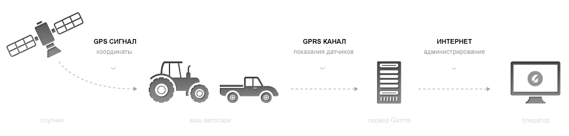

Что такое система «Garma»?
Система «Garma» — удобная техническая платформа, посредством которой вы можете эффективно управлять парком автомобилей, грузовой, пассажирской и сельскохозяйственной техники, отслеживая каждую единицу техники в реальном времени.
Работа системы «Garma» основывается на данных, полученных с установленных на транспортных средствах GPS/GPRS трекерах, которые в режиме реального времени передает по GPRS каналу на сервер технические параметры транспортного средства (положение по GPS-координатам, уровень топлива в баке, коды системных ошибок и т.д.). Собранные данные обрабатываются на сервере и представляются пользователям через удобный интернет-интерфейс.
Основные функции нашей системы
| Контроль расхода топлива | «Garma» следит за остатком топлива в баке, а также за среднем расходом. Система фиксирует любое резкое отклонение и обращает на него внимание оператора | |
| Геопозиционирование | Контроль местонахождения, скорости движения, а также история перемещений | |
| Контроль выполнения работ | Контроль проделанных работ (выезд по маршруту, геофенсинг, время доставки товара, температурный режим в рефрижераторе) | |
| Контроль технического состояния | Аналитика технических параметров, в том числе считывание ошибок из CAN-шины. Оповещение о неисправностях. | |
| Диспетчеризация | Выставления заявок в режиме онлайн. Расчет транспортных задач с учетом пробок. Водитель получает заявку на монитор. | Новая функция появится в 2011 году |
Какой эффект от применения системы «Garma»?
По нашим оценкам, около 20–30% общего расхода топлива за период являются следствием различных манипуляций (приписки пробега, несанкционированный слив и т.д.). Внедрение системы GPS трекинга позволит раз и навсегда решить эту проблему для транспортных и сельскохозяйственных компаний.
Практика нашей работы с клиентами показывает, что с помощью системы GPS трекинга за один сезон среднее сельскохозяйственное предприятие (до 100 единиц техники) может сэкономить до 200 тыс. л. дизельного топлива, что при цене 7 ₴/л составляет 1.4 млн ₴, за счет радикального искоренения практики несанкционированных сливов топлива и приписок пробега.
Для индивидуальных пользователей система «Garma» может быть полезна в первую очередь для анализа пробега и расхода топлива транспортным средством, а также определения его текущего местонахождения и направления движения.
Установка
На каждую единицу техники устанавливается трекер и дополнительные датчики (например открывания дверей). Это оборудование собирает данные и передает их на сервер «Garma». Сервер находиться в дата-центре с надежной системой безопасности.
Установка GPS/GPRS модуля занимает около 2 часов. Продолжительность установки зависит от типа транспортной техники. Мы работаем с опытными специалистами, которые могут оказать помощь в установке и каллибровке трекеров и дополнительных датчиков.
Список трекеров, с которыми работает «Garma»
| Производитель | Модель | Аналоговый канал | Цифровой канал | Память | CAN-шина | |
|---|---|---|---|---|---|---|
| Teltonika | FM-20202 | 4 | 4 | 8 Мб | да | |
| Teltonika | FM-21211 | 3 | 4 | 9 Мб | да |